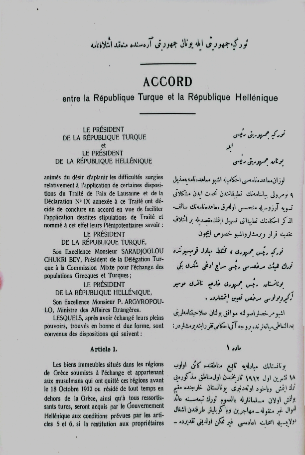

|

|
Türkiye Cumhuriyeti ile Yunan Cumhuriyeti Arasında Mün'akid (imzalanmış) İtilafname
Türkiye Cumhuriyeti Reisi ile Yunan Cumhuriyeti Reisi
Lozan Muahedenamesi ahkamıyla işbu muahedenameye mezil 9 numaralı beyannamenin tatbikatından tahdis eden müşkülatı tasviye arzusuyla mütehassir (hasret çeken) olarak muahedenamenin salifüzzikr (zikredilen) ahkamın tatbikatını teshil (kolaylaştırmak) etmek maksadıyla bir itilaf akdine karar vermişler ve işbu husus için
Türkiye Reisi Cumhuru, muhtelit (karışmış) mübadele komisyonunda Türk heyeti murahhassası reisi Saraçoğlu Şükrü Beyi
Yunanistan Reisi Cumhuru Hariciye Nazırı mösyö Argiropoulos murahhas tayin etmişlerdir. İşbu murahhaslar usulüne muvaffık bulunan salahiyetnamelerini ba'delteati (birbirlerine verdikleri) miyanelerinde bir vechiati ahkamı tekrar ettirmişlerdir:
1 - Madde Yunanistan'ın mübadeleye tabi' menatıkında (bölgelerinde) kain (var olup) olup 18 Teşrinievvel 1912 tarihinden evvel menatıkı mezkureyi (adı geçen bölgeleri) terk etmiş veyahut öteden beri Yunanistan haricinde mukim (oturan) bulunmuş olan müslümanlarla bilumum Türk tebaasına ait emval (mallar) gayrimenkule - muhacirin veya köylüler tarafından işgal dolayısıyla ashabına iadesi gayri mümkün olduğu takdirde -
|